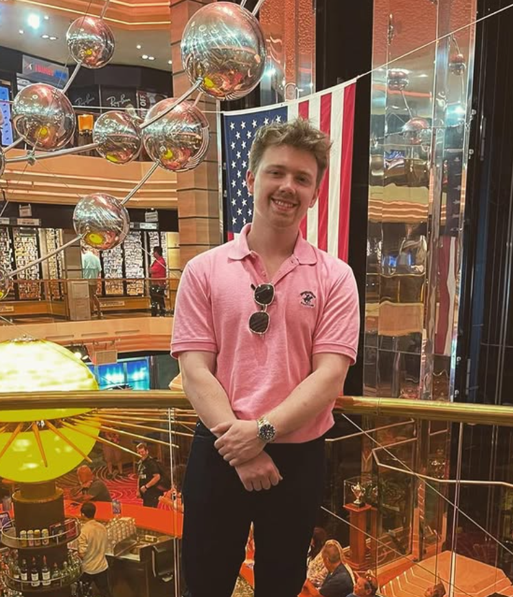

Corey Summerow
Software Engineer / Co-Founder
Corey Summerow is a developer, designer, and entrepreneur specializing in AI-driven applications, interactive systems, and modern software development. As one of the first game developers at Hidden Studios, Corey played a key role in scaling the team and transforming the studio from zero revenue into a high-performing business generating over $50,000 a month and reaching millions of players.
During his time at Hidden Studios, Corey contributed to major UEFN projects including collaborations with top creators and esports organizations. This included working on creator-led experiences such as Escape Caseoh and partnering with some of the biggest names in Fortnite like Caseoh, LazarBeam, SypherPK, and multiple professional teams. His work helped establish the studio's reputation for high-quality gameplay systems, polished environments, and rapid, reliable production pipelines.
Corey's technical foundation comes from his Computer Science education at Full Sail University, where he built projects in C++, React Native, systems programming, and AI. He has developed tools, simulations, mobile interfaces, and interactive systems with a focus on clean architecture, scalability, and seamless user experience.
He is passionate about crafting intuitive user experiences, building systems that feel powerful yet simple, and creating products that merge technical precision with creative vision. Corey believes the best software doesn't just function. It motivates, inspires, and brings ideas to life.